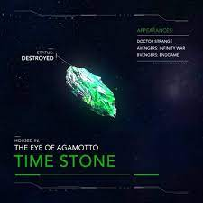

The Time Stone was one of the six Infinity Stones, the remnant of a singularity that predated the universe, representing the element of time. It was contained inside the Eye of Agamotto and placed under the protection of the Masters of the Mystic Arts. In 2017, Doctor Strange took possession of the Stone and used it to defeat Dormammu.During the Infinity War, Doctor Strange relinquished the Stone to Thanos in exchange for sparing Iron Man's life. Thanos then used the Time Stone during the Battle of Wakanda to resurrect Vision after he was killed by Wanda Maximoff, in order to acquire the Mind Stone. Following the Snap, Thanos destroyed the Time Stone, along with the other Infinity Stones to prevent his work being undone. Following the Battle of Earth, where Iron Man used the Stones to kill Thanos and his army at the cost of his own life, Captain America time-traveled to the alternate 2012 to return the Time Stone.
I got the picture from amino apps